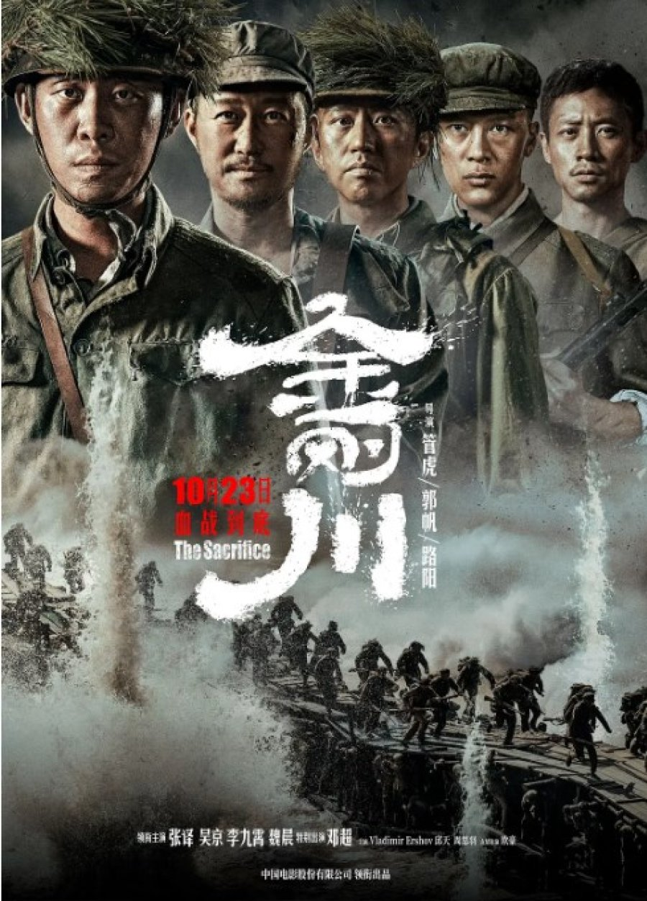
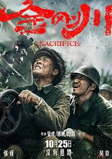

The Sacrifice (2020)
 
The Sacrifice (simplified Chinese: 金刚川; traditional Chinese: 金剛川; pinyin: Jīngāng Chuān, lit. "Geumgang River") is a 2020 Chinese anthology war drama film directed by Guan Hu, Frant Gwo, and Lu Yang, and stars Zhang Yi, Wu Jing, Li Jiuxiao, Vision Wei, and Deng Chao.[5] The film depicts the Korean War from three perspectives and segments, each directed by a different director.
Directed by: Guan Hu; Frant Gwo; Lu Yang
Produced by: Fu Ruoqing; Liang Jing; Guan Hu
Release date: 23 October 2020 (Mainland China); 19 November 2020 (Hong Kong)
Running time: 122 minutes
Country: China
Language: Mandarin; English; Nanchang dialect